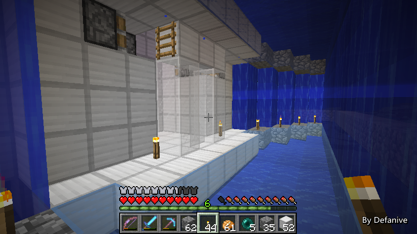
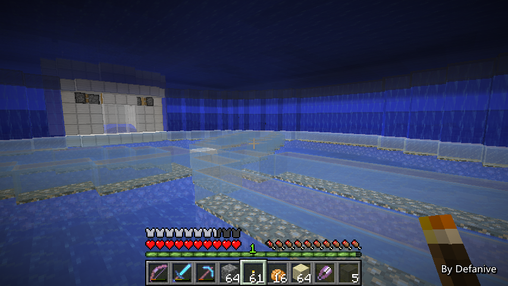

首页
上一页
283
284
285
286
287
288
288
289
290
291
292
293
下一页
末页
defanive2
无尽黑夜
14
接下来TNT会被上方的拉杆激活并掉入猪人堆中
BUD信号重置，电路复位
一切都运行正常
——来自 MCLive
28004楼
2014-05-18 20:41
defanive2
无尽黑夜
14
最后在这里两边对称放上梯子，以防止TNT漏出来
整个系统就完成啦！
——来自 MCLive
28007楼
2014-05-18 20:42
defanive2
无尽黑夜
14
外观，看起来还算是挺不错的了
用起来的话挺方便的，如之前所说
要手动杀就往左边放TNT，打火机点燃之后TNT就被自动推进去了
自动杀的话就往右边放TNT，会被自动推进去并被点燃
PS 当然舱室内需要有水流以保证TNT不会破坏方块
——来自 MCLive
28010楼
2014-05-18 20:45
defanive2
无尽黑夜
14
好吧今天就直播到这里了
等待室的核心装置已经完成了
所剩的就是把整个圆形的水下等待室做完，以及把装潢都做好
那么大工程的这一小部分就算是完工了！
水下工作比想象中的要稍微困难一点
不过从现况看来完成后会是非常漂亮
总之就是这样了，下次直播再见！
——来自 MCLive

28015楼
2014-05-18 20:55
defanive2
无尽黑夜
14
由于这两次更新相距很近，暂时回复还不多
所以就先不做问答环节了，把上次直播的回复留到下一次直播一起回
28021楼
2014-05-18 21:25
defanive2
无尽黑夜
14
今天没什么事情做，又来直播啦！
Wow!
最近直播频率比较高都是因为刚放假
可以各种打游戏了简直赞
——来自 MCLive
28073楼
2014-05-20 22:18
defanive2
无尽黑夜
14
继续回到我们的猪人塔工程啦
水流收集装置这几天没有很用力的做
不过也把之前1/4剩下的一部分给完成了
现在整个水流装置就只差1/4就完工了！
铺完之后就可以开始铺水流（应该不会耗时超过10分钟）
铺完水流之后就可以正式开始造塔的部分了
——来自 MCLive
28078楼
2014-05-20 22:32
defanive2
无尽黑夜
14
这几天主要时间都花在了等待室的工作上
既然是水下建筑，最大的一部分工程量就是排水了
排水这部分就用去了很大一部分的时间
不过可以看到整个等待室的绝大部分都已经完成了！
一个33x33的海底圆形，4格高的内部空间
天花板和地板都是用染色玻璃做成的
外圈没有任何的墙面，直接是水帘
感觉非常的漂亮！
——来自 MCLive
28079楼
2014-05-20 22:36
defanive2
无尽黑夜
14
地板是用浅蓝色玻璃做的
最外面的圆周是用白色染色玻璃做的
并且在白色玻璃下放满了萤石，提供亮度
——来自 MCLive
28080楼
2014-05-20 22:38
defanive2
无尽黑夜
14
整个圆形的圆心在中间用白色玻璃标记了起来
同时从中心伸出了3个圆瓣连接到圆周，给地板增加一点纹路
材质是用浅灰色玻璃做的，稍微比白色玻璃暗一点
以区分圆瓣和圆周边框的区别
同时圆瓣下面也铺有萤石
这样整体来说不需要天花板光源也可以保证整片区域的明亮了
——来自 MCLive
28082楼
2014-05-20 22:44
defanive2
无尽黑夜
14
3个圆瓣的几何形状也很简单
在圆周上作3个点并使得圆周被分成3条等长圆弧
这3个点分别和圆心作于圆等半径的圆弧即可
PS 整个图形所有曲线的长度和是多少？
2个圆周的长度，没看出来的话可以去面壁了
——来自 MCLive
28085楼
2014-05-20 22:48
defanive2
无尽黑夜
14
处置猪人的舱室的对面圆周则是地狱门
PS 地狱门可以做成奇数大小于是就可以对称了
当时整个人就没有了强迫症
——来自 MCLive
28087楼
2014-05-20 22:50
defanive2
无尽黑夜
14
目前整个等待室的进度就是这样了
还未完成的有要把天花板的圆周给装潢好
并且要把其余的一些设施给做好
今天我们就接着把这里尽量完成了吧
——来自 MCLive
28089楼
2014-05-20 22:53
defanive2
无尽黑夜
14
现在已完成的设施中
正上方的是猪人的处死装置，正下方是地狱门
接下来打算在两边分别安置附魔台和储存室
考虑到处死装置的左侧是手动杀死的
所以说会把附魔台放在左侧，储存室放在右侧
——来自 MCLive
28092楼
2014-05-20 22:58
defanive2
无尽黑夜
14
不过玻璃都用完了，当然要先回家烧点玻璃再说
打算把天花板的边缘做成灰色玻璃
整个色调保持天花板相对暗，地板很明亮的感觉
同时也要带箱子附魔台暑假什么的
——来自 MCLive
28094楼
2014-05-20 23:07
defanive2
无尽黑夜
14
好久没有造过附魔台了
——来自 MCLive
28095楼
2014-05-20 23:09
defanive2
无尽黑夜
14
带上一堆奇奇怪怪的东西
可以出发继续建等待室了
——来自 MCLive
28097楼
2014-05-20 23:15
defanive2
无尽黑夜
14
现在正在挖掉旧的鹅卵石圆周
挖完再铺新的灰色玻璃
——来自 MCLive
28102楼
2014-05-20 23:24
defanive2
无尽黑夜
14
把玻璃换好之后当然就需要把漏下来的水给排掉啦。。
水下建筑果然不是一般的烦
——来自 MCLive
28104楼
2014-05-20 23:27
defanive2
无尽黑夜
14
要大面积清理水的话沙子肯定是一个好帮手
当然TNT要对比起来更好，因为清理方便
但是储备没这么多的情况下沙子还是不错的
——来自 MCLive
28107楼
2014-05-20 23:33
defanive2
无尽黑夜
14
换成灰色玻璃之后感觉比鹅卵石要好多了！
——来自 MCLive

28109楼
2014-05-20 23:41
defanive2
无尽黑夜
14
附魔室打算简单的做成向外凸的即可
地板用白色玻璃，天花板用灰色，墙壁用浅灰色
从上到下渐变过来
——来自 MCLive
28112楼
2014-05-20 23:48
defanive2
无尽黑夜
14
排完水，清理出一个5x3的空间
——来自 MCLive
28113楼
2014-05-20 23:54
defanive2
无尽黑夜
14
调整了一下萤石的排布，顿时就好多了！
——来自 MCLive
28114楼
2014-05-20 23:55
defanive2
无尽黑夜
14
最后放好书柜，铁砧，附魔台
附魔室这边就算是完工了！
——来自 MCLive
28115楼
2014-05-20 23:56
defanive2
无尽黑夜
14
箱子这边工程量要小很多
完工之后看起来工作台稍微有点不和谐
其他都还好
——来自 MCLive
28117楼
2014-05-21 00:01
defanive2
无尽黑夜
14
来个360度的感觉吧
——来自 MCLive
28118楼
2014-05-21 00:02
defanive2
无尽黑夜
14
第二张
——来自 MCLive
28119楼
2014-05-21 00:03
defanive2
无尽黑夜
14
third
——来自 MCLive
28120楼
2014-05-21 00:04
defanive2
无尽黑夜
14
cuarto
——来自 MCLive
28121楼
2014-05-21 00:05
首页
上一页
283
284
285
286
287
288
288
289
290
291
292
293
下一页
末页